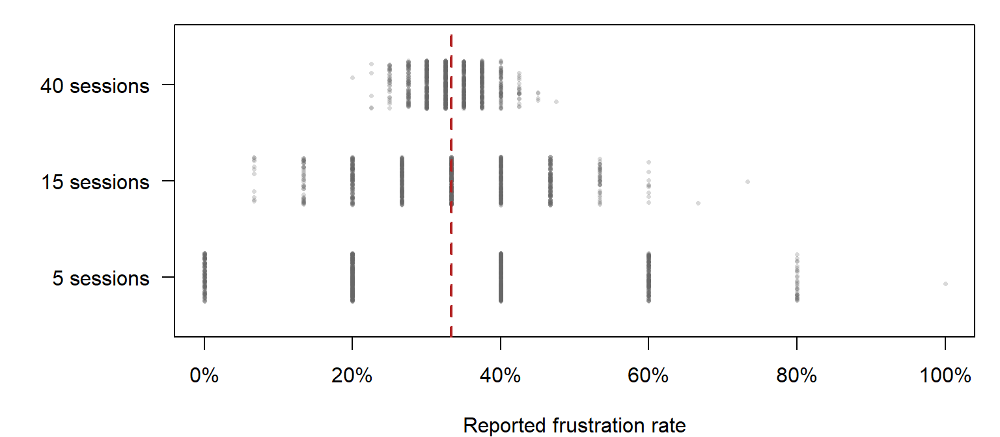

flowchart LR
subgraph BETWEEN["Between-subjects"]
direction TB
G1["Group 1"] --> BA["Build A"]
G2["Group 2"] --> BB["Build B"]
end
subgraph WITHIN["Within-subjects"]
direction TB
G3["Every player"] --> WA["Build A"]
G3 --> WB["Build B"]
end
BETWEEN ~~~ WITHIN
Planning a Playtest
From a design question to data worth analysing
Most of what goes wrong in a playtest analysis went wrong before anyone opened the data: a vague question, the wrong measure, the wrong players, or a design that cannot separate the build from the people playing it. This page is the plan you make before the first tester sits down. The playtest question running through it: “Is Build A worse than Build B?”
Stage: 1 · Core. Time: 30 minutes in class; 15 more for the sections marked Useful when needed. Before this: nothing. This is the first page. Key terms: telemetry, observation, self-report, measure, between-subjects, within-subjects, counterbalancing, random assignment, pilot, threshold. R you will write: none. R starts in R from First Principles.
Learning Outcomes
By the end of these notes you can:
- name the three cases where a team’s judgement of its own game reliably fails;
- distinguish telemetry, observation and self-report, and say what each can and cannot tell you;
- rewrite a vague design question as a measure you could record for a single player;
- choose between a between-subjects and a within-subjects design, and say how counterbalancing protects a within-subjects test;
- explain why a few players are enough to find problems but not to measure them;
- name the ethical obligations of a playtest that records player data;
- write down, before collecting anything, the result that would change your mind.
Why This Matters for Playtesting
Every team makes decisions about their game constantly. Most of those decisions are made from memory, taste and the loudest voice in the room, and most of the time that is fine. Taste is why anyone plays your game rather than a spreadsheet.
Measurement earns its place in the cases where taste reliably fails. There are three of them, and they recur in every project.
You cannot see your own game any more. You have played your level five hundred times. You know where the key is. You cannot un-know it, and no amount of care will let you experience your own tutorial as a stranger. This is the single most common cause of a game that the team finds obvious and the player finds impenetrable.
You cannot feel a rare event. A stutter that happens once every two seconds occupies less than one per cent of frames. Your average frame rate will not show it. Your players will talk about nothing else.
You cannot remember twenty playtests. After a session you remember the two people who struggled most and the last person you watched. You do not remember the distribution, and you will confidently reconstruct one that never existed.
A playtest fixes all three, but only if it is planned. The rest of this page is the plan: seven decisions, made in this order, before anyone plays.
- The design question.
- The measures.
- The design: who plays what.
- How many players.
- Who to recruit.
- Ethics and consent.
- The threshold that would change your mind, and a pilot.
1. Start with a Design Question
The question a designer asks is almost never answerable as asked.
| What you are asked | What you can actually measure |
|---|---|
| “Is the level too hard?” | Deaths per attempt; time to first completion; proportion who never finish; where attempts end |
| “Does the game feel good?” | Time to first successful interaction; retry rate after failure; rated responsiveness |
| “Is the tutorial working?” | Proportion who use the taught mechanic later, unprompted |
| “Do people like the art?” | Rated appeal; which screenshots they choose; where they stop to look |
Each right-hand cell names a specific number you could write down after watching one person play. That is the test. If you cannot describe how you would record it for a single player, you have not finished turning the question into a measurement (rule 2).
The right-hand column is often several measures, not one, and they can disagree. That is not a failure of the method. A tutorial that everybody completes and nobody learns from is a real and common outcome, and only two measures together can find it.
For your project: write down the one question your next playtest has to answer, in the designer’s words. Then rewrite it until you could record the answer after watching a single player. If you cannot get there, the question is not ready and neither is the playtest.
2. Choose Your Measures
Almost everything you analyse in a game project comes from one of three sources of evidence. They answer different questions, so you need to know which one you are holding.
| Source | What it tells you | Examples |
|---|---|---|
| Telemetry | What happened in the game | deaths, completion time, wrong turns, attempts, objectives completed, frame times |
| Observation | How the player’s behaviour unfolded | missed a doorway, backtracked, hesitated at an interaction, ignored a prompt |
| Self-report | What the player says they experienced | difficulty and enjoyment ratings, confidence, comments, questionnaires |
Telemetry is what the game records about itself while it runs. It is objective, it arrives in large quantities, and it tells you what happened but never why. Performance data (frame times, memory) is telemetry too, and it is the one place where the usual summary, the average frame rate, actively misleads you. Distributions and Shape shows why.
Observation is what you see when you watch someone play: where they hesitate, what they miss, where they go back on themselves. You record it as notes against a time or a location, ideally against a short list of things to watch for, written in advance. It catches what telemetry flattens: a player who took the right route after thirty seconds of wandering looks fine in the log.
Self-report is surveys, interviews and think-aloud comments. It is the only source that tells you how the game felt, and the least reliable. People misremember, they are polite, and they answer the question they think you meant. A rating tells you what a player believes about their experience, which is real and useful, but it is not the same as what happened. How to ask well is covered in Data, Variables and Types.
The sources disagree, and that is the point. The most useful finding in a playtest is often where they contradict each other: players say the level is fine and the log shows nobody finds the side route; players say the game runs smoothly and the frame log shows a hitch every two seconds. When they agree, the finding is stronger than any one of them:
Players made more wrong turns (telemetry), observers saw repeated backtracking at the junction (observation), and players rated the level as hard to navigate (self-report).
Checking a finding against more than one source is called triangulation. A team with one source never finds the contradictions, and cannot back up the agreements.
A measure is only usable if it is defined before you collect it. For each one, write down:
- what exactly is recorded, such as “a death event, with its cause”;
- when, such as “on every death, timestamped from session start”;
- in what unit, such as seconds, metres or a 1 to 5 rating;
- with which identifiers, so that it can be joined to everything else.
The last one is where telemetry most often fails. A death event with no session ID cannot be matched to the player’s survey; a survey with no session ID cannot be matched to the match it describes. Tidebreak puts session_id and player_id on every row of every file for exactly this reason.
3. Choose a Design: Who Plays What
The moment you compare two versions of anything, you have to decide who plays which. There are two basic designs.
Between-subjects: different players test each version. Tidebreak’s main file is between-subjects: 30 players each played 4 sessions, 15 of them only on Build A and 15 only on Build B. Nobody saw both.
Within-subjects: every player tests every version. Tidebreak’s paired file is within-subjects: 30 players each played both builds, and their wrong turns were recorded on each.
| Between-subjects | Within-subjects | |
|---|---|---|
| Each player sees | one version | every version |
| Main strength | no carry-over from one version to the next | each player is compared with themselves, so differences in skill cancel out |
| Main weakness | differences between the groups can masquerade as differences between builds | order, learning and fatigue effects |
| Players needed | more | fewer |
| Use when | playing one version changes how you play the other, such as a puzzle you can only solve once | the versions can be played fresh, such as two control schemes |
Why within-subjects is so powerful. Players differ enormously before they touch your build: some are better, faster or more patient than others. In a between-subjects test, all of that variation sits on top of the difference you are trying to see. In a within-subjects test, each player’s own skill appears in both measurements and cancels out. You will see exactly how much this matters in the paired test of Comparing Groups.
Random assignment
In a between-subjects test, you decide who plays which version, by chance. Never let players choose, and never put the first ten through the door on Build A. Players who choose, or who arrive early, differ from the rest in ways that will show up in the results and be credited to the build. Random assignment does not make the groups identical, but it makes any difference between them an accident rather than a pattern.
Order, learning and fatigue
A within-subjects test has the opposite problem. If every player plays A and then B, then B gets players who have learned the controls and the map, and who are more tired and more bored. Any of these can make B look better or worse than it is. These are order effects.
The fix is counterbalancing: half the players play A first, half play B first, decided at random.
flowchart LR S["Players,<br/>split at random"] --> H1["Half 1"] S --> H2["Half 2"] H1 --> A1["Build A"] --> B1["Build B"] H2 --> B2["Build B"] --> A2["Build A"]
Learning and fatigue still happen, but now they happen equally to both builds, so they no longer favour either one.
4. How Many Players?
There is no single answer, because there are two different jobs a playtest can do.
Finding problems needs few players. If a door is hard to find, most players will struggle with it, and you will see it in the first handful of sessions. A well-known rule of thumb from usability research (Nielsen) is that around five testers find most of the obvious problems in an interface. Each extra tester mostly rediscovers what you already know.
Measuring how often needs many. “What proportion of players quit in frustration?” is a different question. With five players, one person changes the answer by 20 percentage points. The figure below takes Tidebreak’s 60 Build A sessions, in which 33% ended in frustration, and draws small samples from them over and over to see what a smaller playtest would have reported.

With 5 sessions, the middle 90% of samples reported anything from 0% to 60%. With 40, from 28% to 40%. The true rate never changed; only the number of sessions did. From Sample to Population explains why the spread shrinks the way it does.
Count players, not sessions. Tidebreak recorded 120 sessions, but only 30 people. Four sessions from one unusually skilled player are not four independent pieces of evidence. When you plan a sample size, plan the number of people.
5. Who to Recruit
The players you test should resemble the players you are making the game for. A playtest recruited from the studio’s Discord samples its most committed fans. A playtest of colleagues samples people who already know the controls. A playtest of classmates samples people of one age with one set of habits. Each answers the question “what do these people think?”, which may not be the question you asked.
Decide in advance who your intended players are, and recruit to match. Record the things about each player that could affect the results, such as experience with the genre, so you can check them later. Tidebreak records each player’s cohort: Novice, Regular or Veteran.
No analysis afterwards corrects for who walked through the door. What you can do is say who they were, in the report’s limitations section.
6. Ethics and Consent
A playtest collects data from real people, and that comes with obligations. Your institution or studio will have its own process; the principles behind it are the same everywhere.
Informed consent. Before they play, tell testers what you are recording (gameplay, screen, voice, survey answers), why, how long you will keep it, and who will see it. Get their agreement, in writing.
The right to stop. Testers can stop at any time, without giving a reason, and can ask for their data to be removed.
Collect only what you need. If the question is about navigation, you do not need a tester’s date of birth. Every extra field is a risk with no benefit.
Separate identity from data. Store names and contact details in one place and gameplay data in another, linked only by a code such as P01. Tidebreak’s files contain no names for this reason.
Telemetry is personal data. Under GDPR, data that can be linked back to an identifiable person is personal data, and that includes gameplay logs tied to an account or a player code you can decode. Coded data is still personal data while the key exists; only data that can never be traced back to a person is anonymous. Store it securely and delete it when you no longer need it.
Take extra care with under-18s. Testing with children needs a parent’s or guardian’s consent as well as the child’s own agreement.
7. Decide in Advance, then Pilot
Write down the result that would change your mind, before you collect anything: “If more than a third of testers never find the second key, I will add a light cue.”
This costs nothing and protects you from the most comfortable mistake in the discipline: running the test, getting an ambiguous result, and finding in it whatever you already believed. If the threshold is written down beforehand, the data gets to answer. If it is not, you will answer and attribute it to the data (rule 1).
Then run a pilot: the whole playtest, start to finish, with one or two people who are not on the team. A pilot finds the problems that would otherwise ruin the real test: a logger that drops the session ID, a survey question everyone misreads, a session that runs twenty minutes over, a build that crashes on the lab machines. Fix them, then begin.
Quick check. A team wants to know whether a new minimap helps players navigate. They let testers choose whether to play with the minimap on or off. What is wrong, and what should they do?
Worked Example
The question as asked. The Tidebreak team ran 120 sessions, 60 on Build A and 60 on Build B. The designer asks “is Build A worse?”, which cannot be answered as asked: worse at what, for whom, by how much?
The measures. Two, from two different sources:
| Source | Measure | Recorded per session as |
|---|---|---|
| Telemetry | Did the session end in a frustration quit? | quit_reason is Frustrated |
| Self-report | “I always knew what my objective was” | A rating from 1 to 5 |
The design. Between-subjects: each player was assigned to one build and played it 4 times. Different players on each build means differences between the two groups of players are a possible explanation for any result, and the report will have to say so.
The threshold, written first. Before anyone opens the file, the team writes: “If more than a quarter of the sessions on either build end in a frustration quit, that build does not ship.”
The result. 20 of 60 Build A sessions ended in a frustration quit (33%), against 5 of 60 on Build B (8%). Build A crosses the line; Build B does not. Nobody has to argue about it, because the argument happened before the data arrived.
The second source. Of the 8 survey items, the objective item has the lowest mean, 2.61 on the 1 to 5 scale. Telemetry says what happened: players on Build A left in frustration. The survey offers a candidate for why: players did not know what they were meant to be doing. Neither source alone would have pointed a designer at the objective marker.
Interpretation Guidance
Every finding is read at three levels, and the discipline is keeping them apart.
What the data shows. 20 of 60 Build A sessions ended in a frustration quit, against 5 of 60 on Build B. This is a count. It is not in dispute.
What the analysis suggests. Something in Build A frustrates players that Build B avoided, and the survey’s weakest item points at objective clarity as a candidate.
What can legitimately be concluded. Build A fails the threshold the team set in advance. That is all. The survey figure is averaged across both builds, so on its own it cannot say the unclear objective belongs to Build A. And because the design is between-subjects, a skeptic can ask whether Build A’s players were simply different. Linking the objective to the frustration is a hypothesis for the next test, not a finding.
Common Mistakes
Collecting first, asking later. Logging everything and hoping a question emerges produces large files and no decisions. Write the question down first (rule 2).
Trusting one source. A survey on its own tells you what players believe; a log on its own tells you what they did; your notes tell you what you happened to see. Treat any one alone as part of the evidence.
Letting players choose their condition. The people who pick an option differ from those who do not, and the difference gets credited to the option.
Running every player in the same order. Without counterbalancing, the second build always gets more practised, more tired players.
Counting sessions as players. Four sessions from one player are one person’s evidence, four times.
Testing only people you know. Friends and colleagues are polite, practised and unrepresentative.
Logging without identifiers. A death event with no session or player ID cannot be joined to anything.
Skipping the pilot. The first real session should not be the one where you discover the logger is broken.
Setting the threshold after seeing the result. A threshold chosen afterwards is always met by exactly the right margin. If it was not written down beforehand, it is not a threshold (rule 1).
Practice
Each takes two or three minutes.
- Make it measurable. Rewrite “is the corridor too dangerous?” as one telemetry measure, one thing an observer would watch for, and one self-report measure, each recordable for a single player.
- Choose a design. You want to compare two control schemes for a racing game, and you can recruit 12 players for an afternoon. Between or within? What must you do to make it fair?
- Critique. A student team tests their puzzle game on 30 classmates in one afternoon. Everyone plays the old version, then the new one. The new version takes 40% less time to solve. List three reasons the new version might not actually be better.
- Write the threshold. Count the sessions that ended in a technical fault, then write the threshold that would make you delay a release over it.
Summary
- Measurement earns its place where taste fails: you cannot see your own game, feel a rare event, or remember twenty playtests.
- A question is measurable when you can say how you would record it for one player.
- Telemetry says what happened, observation says how it unfolded, and self-report says what players experienced. Where they agree the finding is strong; where they disagree there is something to find.
- Between-subjects designs avoid carry-over; within-subjects designs cancel out differences between players. Assign at random, and counterbalance the order.
- A few players find problems. Measuring how often needs many more. Count people, not sessions.
- Recruit players like your audience, get informed consent, collect only what you need, and treat telemetry as personal data.
- Write the threshold that would change your mind before you look, then pilot.
| Key term | Meaning |
|---|---|
| Telemetry | What the game records about itself while it runs |
| Observation | What you record by watching someone play |
| Self-report | What players tell you about their experience |
| Triangulation | Checking a finding against more than one source of evidence |
| Measure | A specific value you could record for one player |
| Between-subjects | Each player tests one version |
| Within-subjects | Every player tests every version |
| Random assignment | Deciding by chance who plays which version |
| Order effect | A difference caused by what a player did first, not by the version |
| Counterbalancing | Varying the order so order effects fall equally on every version |
| Pilot | A full rehearsal of the playtest with one or two people |
| Threshold | The result, written in advance, that would change your decision |
Links
- Ten Rules: rule 1 (decide what would change your mind), rule 2 (a number without a question is decoration) and rule 8 (small samples lie confidently)
- Statistics Reference: sample and population
- Lab 00: Setting Up and Lab 01: Reading Data
- Next: R from First Principles
Reflective Questions
- Pick a mechanic in your own project. Write the designer’s question, then three different measures that would bear on it, then say which one you would trust most and why.
- Name something about your own game that you can no longer judge, because you have played it too often.
- Your next playtest compares two versions of a boss fight. Would you run it between or within subjects? What would a skeptic say about your choice?
- Your team wants to log every input a player makes “in case it is useful”. What would you say, as the person responsible for the testers’ data?